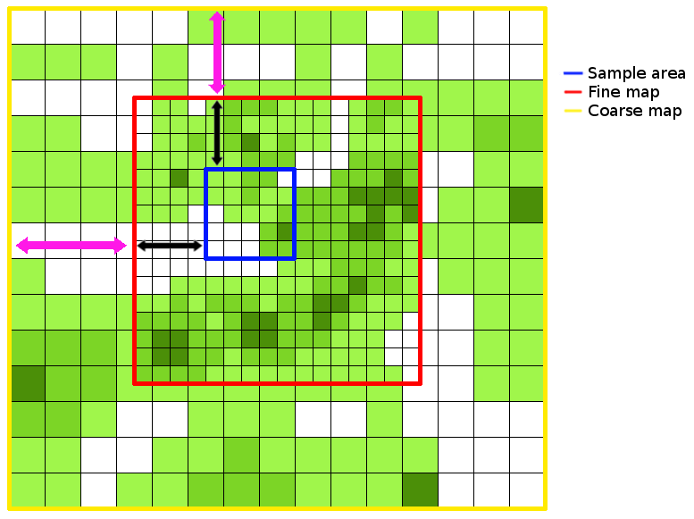

pycoalescence¶
| Documentation | Examples |
|---|---|
| Windows | macOS | Linux |
|---|---|---|
 |
 |
Introduction¶
pycoalescence is a Python module for the spatially-explicit coalescence neutral simulator, necsim, described here. pycoalescence provides a pythonic interface to the C++ simulator for swift simulation set-up, initiation and analysis.
Features¶
A large number of performance-enhancing features have been implemented, as well as support for a wide number of scenarios. The features include:
- Coalescence methods for excellent performance.
- Full output of community structure, with species IDs generated for every individual.
- Full spatial modelling, using a dispersal kernel to simulate spatial dynamics.
- Multiple sampling points, both spatially and temporally.
- Simulations of a region much larger than the sample area.
- Calculation of many biodiversity metrics, including species richness, species abundances, beta-diversity and locations of lineages.
- Usage of protracted speciation to restrict the time period that speciation events can occur in.
- Generate and apply a metacommunity to a simulation without requiring a new simulation to be performed.
- Scalability - support for simulations of tens or hundreds of millions of individuals in a single simulation.
Getting started¶
Installation¶
Two methods of installation are recommended: using conda to handle package management, including installation of all dependencies, or using pip into Python virtual environments (see here for good advice).
The other methods of installing listed here are provided as references to the install process itself, and to provide
finer control over installation methods if difficulties are encountered. Note that pip and conda both internally call
setuptools, which in turn runs installer.py.
Important
Mac OS X and Linux are supported through pip. Mac OS, Linux and Windows are supported through conda. For manual installation it should be possible install pycoalescence on any system, but may require some tinkering.
Note
Whichever installation option you use, it is important to ensure that the package is compiled in the same environment as you intend to run simulations.
Installing via conda¶
Conda is a package manager that handles sourcing of all dependencies in a relatively
straight-forward, cross-platform manner. pycoalescence is provided on conda-forge. Installation of the package and
all dependencies including boost, gdal, cmake and the relevant C++ compiler, simply requires
conda install -c conda-forge pycoalescence. Note that conda installs the dependencies into its own environment and
may ignore system installs.
conda on Linux¶
C++14 compilers are currently unsupported on Linux on conda-forge, meaning that installation through this channel is not possible at this time. The solution is to build the package recipe on your local machine using the following steps (requires git and conda are installed locally).
Change directory to a temporary directory and source the base conda environment
cd tempsource /path/anaconda3/bin/activate
Download the recipe from conda-forge using git and modify the recipe to include linux
git clone https://github.com/conda-forge/pycoalescence-feedstock.git- Delete “or linux” from line 18 in pycoalescence-feedstock/recipes/meta.yaml. This will allow the build on linux systems.
Build the package (make sure conda-build package has been installed) and install the package to your desired environment.
conda-build .(this step takes some time)conda install --use-local pycoalescence --name MyEnv
Note
When the C++ compilers are updated on conda-forge, this method for installing on Linux will no longer be necessary.
Installing via pip¶
Installation via pip requires that the non-pythonic dependencies are installed manually first. Importantly, make sure that gdal is fully functional. On some systems this appears to need compilation directly from source. Also ensure that you have a C++14 compliant compiler, cmake, sqlite and boost installed. Finally make sure your Python 3 is >= 3.4 or Python 2 >= 2.7.9.
With all requirements installled, it is recommended that you use a virtual environment (or pipenv) to control your Python packages (see here).
Finally, installation of pycoalescence, including Python dependencies, should just require
pip install pycoalescence. The package should be downloaded and built.
Installing manually - setuptools¶
This method is not recommended unless you experience problems with conda or pip. To install using setuptools, download
the source code manually and run python setup.py install from the terminal. Running this command will install
pycoalescence to the current Python environment.
Installing manually - installer.py¶
Calling python installer.py [opts] from the pycoalescence directory within the source code allows for finer
control over installation options. Importantly, two different make environments can be used, either ./configure and
make, or cmake. A list of options is given below, and can also be displayed by running python installer.py -h.
Running python installer.py will generate the package in-place, meaning that it will not be added to the Python
environment. This can be desirable for HPC systems where package installation is not permitted.
| Option | Description | Default |
| –cmake | Build the C++ library (necsim) required for pycoalescence. | True |
| –autotools | Use the autotools build process (./configure and make) | False |
| –compiler-args | Additional arguments to pass to the autotools compiler | None |
| –cmake-args | Additional arguments to pass to the cmake compiler during configuration | None |
| –cmake-build-args | Additional arguments to pass to the cmake compiler at build time | None |
| –debug | Compile using DEBUG defines | False |
| -c -C –compile | Compile only, do not re-configure necsim | False |
HPC installation¶
On systems where package installation is not possible, use python installer.py to build the package in-place.
Alternatively, python hpc_setup.py provides a custom installation with a few options switched on for HPC systems,
including usage of the intel compiler by default and optimisation flags for HPC. Note that this option uses the
autotools process (./configure and make) instead of cmake for compilation.
Installation issues¶
Consider using conda to manage package dependencies if you experience issues and please report any problems you have. On Mac OS X, installation via pip requires that the dependencies have already been provided.
The most common issue for installing pycoalescence is gdal dependencies not being found (including errors relating
to cpl_error.h, gdal.h, gdal_priv.h or cpl_conv.h). This is usually the result of gdal installing in a non-standard
location, or the header files not being included with the gdal install. To fix this, install the C++ library on your
system first. Then download the Python package from here, and run
python setup.py build from the gdal directory. If this is successful, run python setup.py install to install
gdal to your Python environment.
For issues related to missing boost headers, make sure that your system has boost properly installed.
Performing simulations¶
Check out the full simulation examples in this jupyter notebook.
Setting up simulations¶
The process of setting up a Simulation object is outlined below.
Instantiate our
Simulationobject usingsim = Simulation(logging_level=20)where the logging level corresponds to the amount of information that is displayed using Python’s logging module (20 corresponds to “info”, the second highest display level, after “debug”).Specify simulation parameters
Use
set_simulation_parameters()to set the job number, task number, output directory and other key simulation variables.Set the map variables by one of the following:
set_map_parameters()to input file paths and dimensionsset_map_files()to set the map file paths. This callsdetect_map_dimensions()to automatically detect file offsets and dimensions.
Tip
Check Limitations of simulation variables for important information on restrictions on simulation inputs.
Note
detect_map_dimensions()requires that the files are in .tif formats so that file dimensions can be read. If input files are csv format, method a) should be used.Note
One can specify either “null” or “none” map types; “null” creates a map at the specified size, whereas “none” creates hard boundaries without any in-memory map object created at all. However, the dimensions of these files must be manually supplied.
Optionally, also run
set_speciation_rates()to set a list of speciation rates to apply at the end of the simulation.
Run the simulation This is split into 3 parts, which can be called individually if necessary:
Finalise setup
- Run
finalise_setup()to check that simulations are setup and set up the maps and data structures in memory necsim.
- Run
Run simulations
- Start the simulation using
run_coalescence() - Returns True if the simulations complete successfully and False if the simulations run out of time and pause
- Start the simulation using
Apply speciation rates and output database
- Generate a coalescence tree for each speciation rate using
apply_speciation_rates() <pycoalescence.simulation.Simulation.apply_speciation_rates() - This function also writes the output to the simulation file.
- Generate a coalescence tree for each speciation rate using
Important
The last three steps can be combined using run(),
which also performs checks for if the simulation has run out of time and paused, rather than completing.
See the examples for the full simulation process.
Note
See Glossary for definitions of sample map, fine map and coarse map.
Key Features¶
Some of key simulation features are listed below.
- Set differing landscape types using fine and coarse density maps, both current and historical (see
set_map_files()andadd_historical_map()). - Specify a sampling mask, as a binary sampling mask defining areas to sample from (the sample map). Alternatively,
for varying sampling effort across space choose uses_spatial_sampling=True in
set_simulation_parameters(). - Multiple sampling points in time using
add_sample_time(). - Protracted speciation simulations using protracted=True in
set_simulation_parameters(). - Non-spatial simulations using spatial=False in
set_simulation_parameters(). - Spatial simulations using a variety of dispersal kernels. This is the default, using a normally-distributed dispersal kernel. For other kernels see here.
- Varying reproductive rates across space using a map of relative reproductive rates. See here.
- Varying death rates across space using a map of relative death rates. See here.
- Varying landscape types including infinite landscapes, infinitely tiled landscapes of the coarse or fine density map and closed landscapes with hard boundaries. See here.
Examples¶
Some basic examples are given below. For more complicated scenarios, including examples of fetching data from completed simulations, please see this jupyter notebook.
A simple simulation
from pycoalescence import Simulation
# set logging level to "info" (from logging module)
c = Simulation(logging_level=20)
# set the main simulation parameters - use default values for other keyword arguments
c.set_simulation_parameters(seed=1, job_type=1, output_directory="output", min_speciation_rate=0.1,
sigma=4, deme=10, sample_size=0.1, max_time=1)
# optionally add a set of speciation rates to apply at the end of the simulation
c.set_speciation_rates([0.1, 0.2, 0.3])
# set the map parameters - null means the map will be generated with 100% cover everywhere (no file input).
c.set_map_parameters(sample_file = "null", sample_x = 100, sample_y=100,
fine_file = "null", fine_x = 200, fine_y = 200, fine_x_offset = 50, fine_y_offset = 50,
coarse_file = "null", coarse_x = 1000, coarse_y = 1000,
coarse_x_offset = 100, coarse_y_offset = 100, coarse_scale = 10,
historical_fine_map = "null", historical_coarse_map = "null")
# run checks, complete the simulation and output the database
c.run()
A more complex example using multiple temporal sampling points and detection of map dimensions from the inputted map files.
from pycoalescence import Simulation
c = Simulation()
# set the main simulation parameters
c.set_simulation_parameters(seed=1, job_type=1, output_directory="output", min_speciation_rate=0.1,
sigma=4, tau=4, deme=1, sample_size=0.1
max_time=100, dispersal_method="fat-tailed", m_prob=0.0, cutoff=0,
dispersal_relative_cost=1, min_num_species=1, habitat_change_rate=0.2,
gen_since_historical=200, time_config_file="null", restrict_self=False,
landscape_type=False)
# add a set of speciation rates to be applied at the end of the simulation
c.set_speciation_rates([0.2, 0.3, 0.4])
# set the map files - note that dimensions and offsets are detected automatically from the files
c.set_map_files(sample_file="null", fine_file="path/to/fine.tif", coarse_file="path/to/coarse.tif")
# add sample times
c.add_sample_time(0.0)
c.add_sample_time(1.0)
# add historical maps
c.add_historical_map(fine_map="path/to/historicalfine1.tif", coarse_map="path/to/historicalcoarse1.tif", time=1,
rate=0.5)
# run checks, complete the simulation and output the database
c.run()
Note
necsim can also be run directly using command line arguments (see Introduction to necsim), but this is not recommended.
Dispersal Kernels¶
Three different dispersal functions are currently supported, which take some combination of the sigma (\(\sigma\)) , tau (\(\tau\) ), m_prob (\(m\) ) and cutoff (\(c\) ) dispersal parameters. You only need to provide the required parameters for each dispersal method; any additional parameters provided will be ignored.
- Normal distribution (the default)
- This requires \(\sigma\) only (the standard deviation). The outputted dispersal kernel in two dimensions will follow a Rayleigh distribution for dispersal distance, \(N(r)\)
- Fat-tailed distribution
- This requires both \(\sigma\) and \(\tau\). Importantly, for our fat-tailed dispersal kernel, \(F(r)\), \(\lim{\tau \to \inf} = N(r)\). Within this dispersal kernel, there is an increased chance of long-distance dispersal (but lower than the normal-uniform dispersal kernel).
- Normal-uniform distribution
- This requires \(\sigma\), \(m\) and \(c\) . Here, we pick with probability \(1-m\) from a normal distribution with standard deviation \(\sigma\), and probability \(m\) from a uniform distribution. This uniform distribution picks a random distance uniformly between 0 and \(c\), the maximal dispersal distance. For very large \(c\), extremely long distance dispersal is possible.
It is also possible to provide a dispersal probability map, which sets the probability of dispersing from one cell to
another. The dispersal map should be dimensions xy by xy where x and y are the dimensions of the fine map. A
dispersal map can be set by using
set_map_files(dispersal_map="/path/to/dispersal.tif").
pycoalescence has the ability to simulate a dispersal kernel on a landscape. For more information about that process, see here.
Important
In this scenario, it is not possible to use a coarse map, which should be “none”.
Differing demographic rates¶
Simulations can use varying reproductive and/or death rates across the landscape, but using
set_map_files(reproduction_map="/path/to/rep.tif", death_map="/path/to/death.tif").
In this scenario, all species have different per-capita reproduction and death rates across the landscape.
Note
Density is already taken into account during simulations for reproduction rates, so the reproduction map should be solely for the per-capita differences in reproductive rate.
Note
In a neutral model, each death event is followed by a birth event. The death map therefore represents both the relative number of deaths, and the relative number of maturations in each cell. The reproduction map instead indicates the relative number of propagules generated by each cell which may end up dispersing and maturing at other locations.
Important
The reproduction and death maps can only be used with a fine map, and coarse map should be set to “none”.
Limitations of simulation variables¶
Important
This section contains key information about the simulation inputs. Please read carefully to minimise any unnecessary bugs.
Certain simulation variables have limitations, depending on the method of setting up the simulation.
Map variables set up using
set_map_parameters()- Sample map dimensions must be smaller than fine map dimensions.
- Fine map dimensions must be smaller than coarse map dimensions (supplied at the resolution of the fine map files).
- Dimensions of historical fine and coarse maps must match their respective current map dimensions.
- All offsets must maintain the smaller map within the larger map
- If any files are supplied as ‘null’, map sizes must still be provided. This is important for sample map size, but should be corrected in a future update for coarse map files.
Map files (and variables) set using
set_map_files()- In addition to the above conditions being true, the files must all be georeferenced, so that coarse and fine map dimensions will be read correctly.
Hint
Use a GIS program (such as ArcGIS or QGIS) for manipulation of map files to ensure georeferencing is preserved.
- If the samplemask map is “null”, the program will read the dimensions from the fine map and choose that as the area to sample entirely over. Supplying “null” will therefore sample the entirety of the fine map.
Hint
Scalings and offsets between maps should also work correctly, but if problems are encountered, try manually specifying offsets and dimensions to identify any problems.
- The reproduction map, death map and dispersal map (if provided) must match the dimensions of the fine map. No coarse map should be provided in these scenarios.
An example of how the map files are related is shown below. Black arrows indicate the offsets for the fine map (in the x and y dimensions) and purple arrows indicate the offsets for the coarse map.
Infinite Landscapes¶
Simulations can also be run on infinite landscapes. Set landscape_types=opt in
set_simulation_parameters() where opt is one
of the following:
- “closed” (default)
- Run without infinite landscapes, with closed boundaries to the coarse map.
- “infinite”
- Run with a historical infinite landscape outside of the coares map boundaries.
- “tiled_coarse”
- Tile the coarse map infinitely in all dimensions. A coarse map must be provided.
- “tiled_fine”
- Tile the fine map infinitely in all dimensions. No coarse map should be provided.
Optimising Simulations¶
Note
As of version 1.2.6rc35 dynamic resizing of internal objects is implemented. Whilst this does reduce RAM usage in all scenarios, it also means the optimisation process outlined below only relevent when the major constraint is the size of the density maps.
The optimisation process below can reduce RAM usage in systems where the major limitation is that the size of the density maps is much larger than the number of individuals being simulated. This process has a minor to major impact on performance, depending on the number of individuals. It will not fix issues with simulations not finishing, only reduce the RAM requirements.
optimise_ram() exists for reducing the RAM requirements of
a simulation. Running the function with a specific RAM limit, in GB, should choose a sample map size and offsets to
minimise the in-memory object sizes. This may have a minor impact on simulation speed, but this is likely negligible.
After the function is run, the Simulation class should have re-defined
the grid x and y dimensions to be the largest size possible to simulate for the required memory. The sample map offsets
from the grid are then also stored, such that the grid encompasses the area with the highest number of individuals.
optimise_ram() may take some time to run. However, for a
single set of simulations with the same RAM limit, this function should only need to be completed once. Getting and
setting the optimised solution is therefore possible with
get_optimised_solution() and
set_optimised_solution(). The whole procedure is
outlined below.
# Detect the RAM-optimised solution
>> sim1.optimise_ram()
# Get the optimised solution for Simulation object sim1
>> sim1.get_optimised_solution()
{'grid_file_name': 'set',
'grid_x_size': 5134,
'grid_y_size': 5134,
'sample_x_offset': 8208,
'sample_y_offset': 14877}
# Now set the optimised solution for Simulation object sim2
>> sim2.set_optimised_solution({'grid_file_name': 'set',
'grid_x_size': 5134,
'grid_y_size': 5134,
'sample_x_offset': 8208,
'sample_y_offset': 14877})
Generating Configuration Files¶
The default process is to not generate any actual config files - these are instead kept in memory to be passed to C++.
However, the configs can be written to a file using
write_config(), which may be useful for storing simulation
parameters outside of the simulation database.
Example configuration file
[main]
seed = 1
job_type = 2
output_directory = output/
min_spec_rate = 1e-05
sigma = 0.5
tau = 2
deme = 10
sample_size = 0.1
max_time = 2000
dispersal_relative_cost = 1
min_species = 1
[sample_grid]
path = /Data/Maps/maskmap.tif
x = 486
y = 517
mask = /Data/Maps/maskmap.tif
[fine_map]
path = /Data/Maps/finemap.tif
x = 34000
y = 28000
x_off = 17155
y_off = 11178
[coarse_map]
path = /Data/Maps/coarsemap.tif
x = 24000
y = 20000
x_off = 10320
y_off = 7200
scale = 10.0
[historical_fine0]
path = none
number = 0
time = 200
rate = 0
[historical_coarse0]
path = none
number = 0
time = 200
rate = 0
[historical_fine1]
path = none
number = 1
time = 200
rate = 0
[historical_coarse1]
path = none
number = 1
time = 200
rate = 0
[dispersal]
method = norm-uniform
m_probability = 1e-10
cutoff = 0
restrict_self = 0
landscape_type = 0
Post-simulation analysis¶
Once simulations are complete, necsim’s applying speciation rates functionality
can be used to apply additional speciation rates to the coalescence tree. A simple way of applying additional simulation
rates is provided within the CoalescenceTree class.
The two functions for this routine are
set_speciation_parameters()which primarily takes a list of speciation rates to apply (for other arguments seedocumentation.apply()performs the analysis and writes to the output file. This can be extremely RAM and time-intensive for simulations of a large number of individuals. The calculations will be stored in extra tables within the same SQL file as originally specified.
Instead of speciation events always contributing a new species, they can instead draw from a metacommunity, simulating immigration events. There are three methods of providing a metacommunity:
- simulate a non-spatial community using a metacommunity size and metacommunity speciation rate parameter to generate the species abundances from which to draw individuals.
- analytically generate the community using an approximation of the above simulation. The same two parameters (metacommunity size and metacommunity speciation rate) are required.
- Supply a database containing a SPECIES_ABUNDANCES table and an external community reference number referring to a particular generated community within the database.
All methods use the same function,
set_speciation_parameters() with
option set as one of “simulated”, “analytical” or a path to the external database, respectively for the above
three methods.
Examples¶
A basic application procedure is
from pycoalescence import CoalescenceTree
t = CoalescenceTree()
speciation_rates = [0.1, 0.2 ,0.3]
t.set_database("output/data_1_1.db")
t.set_speciation_parameters(speciation_rates)
t.apply()
The CoalescenceTree class object can also be set up from a
Simulation class object as:
from pycoalescence import Simulation, CoalescenceTree
sim = Simulation()
# ... set up simulation here, then run
# Now import our completed simulation without needing to run t.set_database("filepath")
t = CoalescenceTree(sim)
Example application with more complicated parameters
from pycoalescence import Simulation, CoalescenceTree
sim = Simulation()
# ... set up simulation here, then run
# Now import our completed simulation without needing to run t.set_database("filepath")
speciation_rates = [0.1, 0.2, 0.3]
times = [0.0, 1.0, 2.0]
t = CoalescenceTree(sim)
t.set_speciation_parameters(speciation_rates=speciation_rates, record_spatial=True,
record_fragments="path/to/fragments.csv", sample_file="path/to/sample/file.tif",
times=times)
t.apply()
A few biodiversity metrics can then be obtained directly from the database using built-in functions, relieving the user of having to generate these manually. These include
- species richness, using
get_species_richness() - species abundances, using
get_species_abundances() - species octave (2^n) classes for generating species abundance distributions,
using
get_octaves()
Check out other full examples in this jupyter notebook.
Note
The above functions for acquiring biodiversity metrics require supplying a speciation rate and time, otherwise will output data for all speciation rates and times.
Tip
Equivalent functions also exist for obtaining individual fragment biodiversity metrics.
Tip
The entire list of species can be outputted using
get_species_list. This may be useful
for scenarios where it is desirable to calculate custom biodiversity metrics.
Extended analysis¶
The coalescence_tree module can be used for more extensive simulation
analysis, such as comparing simulated landscapes to real data and calculating goodness of fits.
The general procedure for using this module involves a few functions, all contained in the
CoalescenceTree class.
set_database()generates the link to the SQL database, which should be an output from a necsim simulation (run using theSimulation class).import_comparison_data()reads an SQL database which contains real data to compare to the simulation output. The comparison data should contain the following tables:- BIODIVERSITY_ METRICS, containing only “metric”, “fragment”, “value” and “number_of_individuals” columns. The metric can be “fragment_richness” or any other metric created by your own functions which exists also in the simulated data.
- SPECIES_ABUNDANCES containing at least “SpeciesID”, “Abund”.
Additionally, one can provide the following if comparisons between fragments are required:
- FRAGMENT_ABUNDANCES containing at least “Plot”, “Mnemonic” and “Abund”.
- FRAGMENT_OCTAVES containing at least “fragment”, “octave”, “num_species”. This can also be calculated from FRAGMENT_ABUNDANCES using
calculate_comparison_octaves()
Additional Package Features¶
These features are not required for spatially-explicit coalescence models, as they are utilised internally by the package. However, there are some features that could be of great convenience to users, especially for generating and manipulating landscapes using tif files.
- Read tif files and perform a number of operations taking into account georeferencing of the data.
Functionality is contained within the
Map class(see here). - Generate fragmented landscapes (see here). This may be useful for generating example landscapes of a particular size with desired characteristics.
- Simulate a dispersal kernel on a landscape to obtain characteristics of the effective dispersal kernel. Currently only a single map is supported with “closed”, “infinite” or “tiled” landscape types (see here).
- Simulations can be merged into a single output, with each simulation occupying a separate guild (see here). Analyses can then be performed on the combined data.
Testing install¶
The system install can be tested by running test_install.py from the command line
(python test_install.py) which requires that python setup.py has been successfully run previously or the package
otherwise successfully installed.
Prerequisites¶
Essential¶
Note that conda should detect and install all prerequisites automatically. Pip will detect and install Python prerequisites (such as numpy), although on some systems will fail to install gdal.
- Python version 2 >= 2.7.9 or 3 >= 3.4.1. Other versions may work, but are not supported.
- C++ compiler (such as GNU g++) with C++14 support.
- Cmake >= 3.6 for installing via pip or conda.
- The SQLite library for both
C++andPythoninstallations. Comes as standard with Python. - The gdal library for both Python and C++ (available here). Although it is possible to turn
off gdal support, this is not recommended as it is essential if you wish to use .tif files for
necsim. It allows reading parameter information from .tif files (using
detect_map_dimensions()). Both the Python package andC++binaries are required; installation differs between systems, so view the gdal documentation for more help installing gdal properly. - The Boost library for C++ available here.
- Numerical Python (
numpy) package (pip install numpy).
Recommended¶
- For work involving large csv files, the fast-cpp-csv-parser by Ben Strasser, available here is recommended. This provides much faster csv read and write capabilities and is probably essential for larger-scale simulations, but not necessary if your simulations are small or you are intending to use .tif files (the recommended method). The folder fast-cpp-csv-parser/ should be in the same directory as your necsim C++ header files (the lib/necsim directory) and requires manual installation.
- Scipy package for generating fragmented landscapes (
pip install scipy). - Matplotlib package for plotting fragmented landscapes (
pip install matplotlib).
Glossary¶
- grid
- Used to refer to the simulation area that is stored in memory as a matrix, for quick referencing. If no RAM optimisations have been performed, this will be the same size as the sample map. If also no sample map is used, this will be the same as the fine map.
- sample map
- The map file containing the points to be sampled from. This is the most zoomed in level of the simulation, and should encompass all starting locations of lineages.
- fine map
- The map file at a higher resolution (the same as the sample grid) which covers the area lineages are most likely to move to, or where a higher spatial resolution is considered important.
- coarse map
- The map file at a lower resolution (specified by the scale) which covers a larger area than the fine map. This is to allow lineages to move far from their starting positions if required.
- historical map
- A historic map containing population densities at those times. Both fine and coarse historical maps can be declared and multiple sets of pristine maps can be declared at unique times.
Version¶
Version 1.2.7a2
Contacts¶
Author: Samuel Thompson
Contact: samuelthompson14@imperial.ac.uk - thompsonsed@gmail.com
Institution: Imperial College London and National University of Singapore
This project is released under MIT See file LICENSE.txt or go to here for full license details.